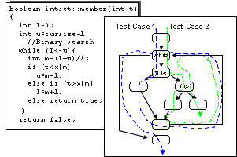
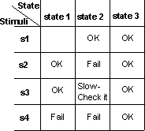

Artifacts >
Artifacts >
 Test Artifact Set >
Test Artifact Set >
 {More Test Artifacts} >
Test Definition >
{More Test Artifacts} >
Test Definition >
 Test Case >
Test Case >
 Guidelines >
Test Case
Guidelines >
Test Case
Artifacts >
Test Artifact Set >
{More Test Artifacts} >
Test Definition >
Test Case >
Guidelines >
Test Case
Guidelines:
| |||||||||||||||||||||||||||||||||||||||||||||||||||||||||||||||||||||||||||||||||||||||||||||||||||||||||||||||||||||||||||||||||||||||||||||||||||||||||||||||||||||||||||||||||||||||||||||||||||||||||||||||||||||||||||||||||||||||||||||||||||||||||||||||||||||||||||||||||||||||||||
| Scenario 1 | Basic Flow | |||
| Scenario 2 | Basic Flow | Alternate Flow 1 | ||
| Scenario 3 | Basic Flow | Alternate Flow 1 | Alternate Flow 2 | |
| Scenario 4 | Basic Flow | Alternate Flow 3 | ||
| Scenario 5 | Basic Flow | Alternate Flow 3 | Alternate Flow 1 | |
| Scenario 6 | Basic Flow | Alternate Flow 3 | Alternate Flow 1 | Alternate Flow 2 |
| Scenario 7 | Basic Flow | Alternate Flow 4 | ||
| Scenario 8 | Basic Flow | Alternate Flow 3 | Alternate Flow 4 |
NOTE: For simplicity, Scenarios 5, 6, and 8 only depict a single execution of the loop indicated by Alternate flow 3.
Deriving the test cases for each scenario is done by identifying the specific condition that will cause that specific use-case scenario to be executed.
For example, suppose the use case depicted in the diagram above stated the following for Alternate Flow 3:
"This flow of events occurs if the dollar amount entered in Step 2 above, "Enter Withdraw Amount" is greater than the current account balance. The system displays a warning message and then rejoins the basic flow at Step 2 "Enter Withdraw Amount" above, where the bank customer can enter a new withdrawal amount."
With this information, you can begin to identify the test cases needed to execute the alternate flow 3:
| Test Case ID | Scenario | Condition | Expected Result |
| TC x | Scenario 4 | Step 2 - Withdraw Amount > Account Balance | Rejoin basic flow at Step 2 |
| TC y | Scenario 4 | Step 2 - Withdraw Amount < Account Balance | Does not execute Alternate Flow 3, takes basic flow |
| TC z | Scenario 4 | Step 2 - Withdraw Amount = Account Balance | Does not execute Alternate Flow 3, takes basic flow |
NOTE: the test cases shown above are very simplistic since no other information was provided. Test cases are rarely this simple.
A more realistic example of deriving test cases from use cases is provided below.
Example:

Actors and use cases in an ATM machine.
The following table contains the basic flow and some alternate flows for Cash Withdrawal use case in the diagram above:
| Basic Flow | This Use Case begins with the ATM in the
Ready State.
Use Case ends with the ATM in the Ready State. |
| Alternate Flow 1 - Not a valid Card | In Basic Flow Step 2 - Verify Bank Card, if the card is not valid, it is ejected with an appropriate message. |
| Alternate Flow 2 - ATM out of Money | At Basic Flow Step 5 - ATM Options, if the ATM is out of money, the "Cash Withdraw" option will not be available. |
| Alternate Flow 3 - Insufficient funds in ATM | At Basic Flow Step 6 - Enter Amount, if the ATM contains insufficient funds to dispense the requested amount, an appropriate message will be displayed, and rejoins the basic flow at Step 6 - Enter Amount. |
| Alternate Flow 4 - Incorrect PIN | At Basic Flow Step 4 - Verify Account and
PIN, the customer has three tries to enter the correct PIN. If an incorrect PIN is entered, the ATM displays the appropriate message and if there are still tries remaining, this flow rejoins Basic Flow at Step 3 - Enter PIN. If, on the final try the entered PIN number is incorrect, the card is retained, ATM returns to Ready State, and this use case terminates. |
| Alternate Flow 5 - No Account | At Basic Flow Step 4 - Verify Account and PIN, if the Banking system returns a code indicating the account could not be found or is not an account which allows withdrawals, the ATM displays the appropriate message and rejoins the Basic Flow at Step 9 - Return Card. |
| Alternate Flow 6 - Insufficient Funds in Account | At Basic Flow Step 7 - Authorization, the Banking system returns a code indicating the account balance is less than the amount entered in Basic Flow Step 6 - Enter Amount, the ATM displays the appropriate message and rejoins the Basic Flow at Step 6 - Enter Amount. |
| Alternate Flow 7 - Daily maximum withdrawal amount reached | At Basic Flow Step 6 - Authorization, the Banking system returns a code indicating that, including this request for withdrawal, the customer has or will have exceeded the maximum amount allowed in a 24 hour period, the ATM displays the appropriate message and rejoins the Basic Flow at Step 6 - Enter Amount. |
| Alternate Flow x - Log Error | If at the Basic Flow Step 10 - Receipt, the log cannot be updated, the ATM enters the "secure mode" in which all functions are suspended. An appropriate alarm is sent to the Bank System to indicate the ATM has suspended operation. |
| Alternate Flow y - Quit | The customer can, at any time, decide to terminate the transaction (quit). The transaction is stopped and the card ejected. |
| Alternate Flow z - "Tilt" | The ATM contains numerous sensors which monitor different functions, such as power, pressure exerted on the various doors and gates, and motion detectors. If at any time a sensor is activated, an alarm signal is sent to the Police and the ATM enters a "secure mode" in which all functions are suspended until the appropriate re-start / re-initialize actions are taken. |
|
|
|
The following scenarios can be derived from this use case
| Scenario 1 - Successful cash withdraw | Basic Flow | |
| Scenario 2 - ATM out of money | Basic Flow | Alternate Flow 2 |
| Scenario 3 - Insufficient Funds in ATM | Basic Flow | Alternate Flow 3 |
| Scenario 4 - Incorrect PIN (tries left) | Basic Flow | Alternate Flow 4 |
| Scenario 5 - Incorrect PIN (no tries left) | Basic Flow | Alternate Flow 4 |
| Scenario 6 - No Account / incorrect account type | Basic Flow | Alternate Flow 5 |
| Scenario 7 - Insufficient Account Balance | Basic Flow | Alternate Flow 6 |
NOTE: For simplicity the loops in Alternate flows 3 and 6 (Scenarios 3 and 7), and combinations of loops have not been included in the table above.
For each of these seven scenarios, test cases need to be identified. Test cases can be identified and managed using matrices or decision tables. A common format is shown below, where each row represent an individual test case, and the columns identify test case information. In this example, for each test case, there is a test case ID, Condition (or description), and all the data elements participating in the test case (as input or already in the database), and expected result.
To begin developing the matrix, start by identifying what data elements are required to execute the use-case scenarios. Then, for each scenario, identify at least test case that contains the appropriate condition to execute the scenario. For example, in the matrix below, V (valid) is used to indicate this condition must be VALID for the basic flow to execute and I (invalid) is used to indicate the condition which will invoke the desired alternate flow. In the table below, "n/a" indicates that this condition is not applicable to the test case.
| TC ID# | Scenario / Condition | PIN
|
Account #
|
Amount Entered
(or chosen)
|
Amount in Account
|
Amount in ATM
|
Expected Result |
| CW1. | Scenario 1 - Successful Cash Withdraw | V | V | V | V | V | Successful cash withdrawal. |
| CW2. | Scenario 2 - ATM out of Money | V | V | V | V | I | Cash Withdraw option unavailable, end of use case |
| CW3. | Scenario 3 - Insufficient funds in ATM | V | V | V | V | I | Warning message, return to Basic Flow Step 6 - Enter Amount |
| CW4. | Scenario 4 - Incorrect PIN (> 1 left) | I
|
V | n/a | V | V | Warning message, return to Basic Flow Step 4, Enter PIN |
| CW5. | Scenario 4 - Incorrect PIN (= 1 try left) | I
|
V | n/a | V | V | Warning message, return to Basic Flow Step 4, Enter PIN |
| CW6. | Scenario 4 - Incorrect PIN (= 0 tries left) | I
|
V | n/a | V | V | Warning message, card retained, end of use case |
In the matrix above, the six test cases execute the four scenarios. For the Basic Flow, test case CW1 above is known as a positive test case. It executes the Basic Flow path through the use case without any deviations. Comprehensive testing of the Basic Flow must include negative test cases to ensure that the Basic Flow is taken only when the conditions are correct. These negative test cases are represented by test cases CW2 - 6 (the shaded cell indicates the condition needed to execute the alternate flows). While CW2 - 6 are negative test cases for the Basic Flow, they are positive test cases for Alternate flows 2 - 4, and there is at least one negative test case each of these Alternate Flows (CW1 - the Basic Flow).
Scenario 4 is an example where having just one positive and one negative test case per scenario is not sufficient. To thoroughly test Scenario 4 - Incorrect PIN, at least three positive test cases (to invoke Scenario 4) are needed:
Notice, that in the above matrix, no actual values were entered for the conditions (data). An advantage of creating the test case matrix in this manner is that it is easy to see what conditions are being tested. It is also very easy to determine if sufficient test cases have been identified, since you only need to look at Vs and Is (or as done here - shaded cells). Looking at the above table, there are several conditions for which there is no shaded cell, therefore, we are missing test cases, such as for Scenario 6 - No Account or Incorrect Account Type and Scenario 7 - Insufficient Account Balance.
One all the test cases have been identified, they should be reviewed and validated to ensure accuracy, appropriateness, and eliminate redundant or equivalent test cases. See Checkpoints: Test Case for more details.
Upon approval of the test cases, the actual data values can be identified (in the test case implementation matrix) and the test data built (see Guidelines: Test Data for more information regarding test data).
| TC ID# | Scenario / Condition | PIN
|
Account #
|
Amount Entered
(or chosen)
|
Amount in Account
|
Amount in ATM
|
Expected Result |
| CW1. | Scenario 1 - Successful Cash Withdraw | 4987 | 809 - 498 | 50.00 | 500.00 | 2,000 | Successful cash withdrawal. Account balance updated to 450.00 |
| CW2. | Scenario 2 - ATM out of Money | 4987 | 809 - 498 | 100.00 | 500.00 | 0.00 | Cash Withdraw option unavailable, end of use case |
| CW3. | Scenario 3 - Insufficient funds in ATM | 4987 | 809 - 498 | 100.00 | 500.00 | 70.00 | Warning message, return to Basic Flow Step 6 - Enter Amount |
| CW4. | Scenario 4 - Incorrect PIN (> 1 left) | 4978
|
809 - 498 | n/a | 500.00 | 2,000 | Warning message, return to Basic Flow Step 4, Enter PIN |
| CW5. | Scenario 4 - Incorrect PIN (= 1 try left) | 4978
|
809 - 498 | n/a | 500.00 | 2,000 | Warning message, return to Basic Flow Step 4, Enter PIN |
| CW6. | Scenario 4 - Incorrect PIN (= 0 tries left) | 4978
|
809 - 498 | n/a | 500.00 | 2,000 | Warning message, card retained, end of use case |
The test cases above are only a few of the test cases needed to verify the Cash Withdraw Use Case for this iteration. Other test cases needed include:
In future iterations, when other flows are implemented, test cases will be needed for:
When identifying functional test cases, ensure the following:
See also Guidelines: Test Data for additional information regarding the test data.
Not all requirements for a target-of-test will be reflected in use cases. Non-functional requirements, such as performance, security and access, and configuration requirements specify additional behaviors or characteristics of the target-of-test. The Supplementary Specification is the primary source for deriving test cases for these additional behaviors.
Below are described guidelines for deriving these additional test cases:
The primary input for performance test cases are the Supplementary Specifications which contain the non-functional requirements (see Artifact: Supplementary Specifications). Use the following guidelines when deriving test cases for performance test:
As with test cases for functional tests, there will typically be more than one test case per use case / requirement. It is more common that there will be one test case that is below the performance threshold value another at the threshold value, and a third test case above the threshold value.
In addition to the above performance criteria, ensure that you identify the specify conditions that affect response times, including:
Capture test cases for performance test in matrices similar to those used for function test.
See also Guidelines: Test Data for additional information regarding the test data.
Below are some examples for the different types of Performance Tests:
For Load Test:
| TC ID# | Workload | Condition
|
Expected Result |
| PCW1. |
1 (single ATM) |
Complete Withdraw Transaction |
Complete transaction (non-actor dependent timing) occurs < 20 seconds |
| PCW2. |
2 (1,000 simultaneous ATMs) |
Complete Withdraw Transaction |
Complete transaction (non-actor dependent timing) occurs < 30 seconds |
| PCW3. |
3 (10,000 simultaneous ATMs) |
Complete Withdraw Transaction |
Complete transaction (non-actor dependent timing) occurs < 50 seconds |
For Stress Test:
| TC ID# | Workload | Condition
|
Expected Result |
| SCW1. |
2 (1,000 simultaneous ATMs) |
Database lock - 2 ATMs requesting same account |
ATM requests queued |
| SCW2. |
2 (1,000 simultaneous ATMs) |
Bank System communication is unavailable |
Transaction is queued or times out |
| SCW3. |
2 (1,000 simultaneous ATMs) |
Bank System communication is terminates during transaction |
Warning message is displayed |
Actors and use cases describe the interaction between external users of the system and the actions performed by the system to yield a value to a particular actor. Complex systems contain many actors and it is critical that we develop test cases to ensure that only those actors specified to execute the use cases can do so. This is especially true if there are differences in the use case flow of events based upon actor type.
For example, in the ATM use cases, different use case flow of events may be executed for the actor "Bank Customer" if their card and account is from the bank that owns the ATM versus the "Bank Customer" who uses a bank card (and account) from a competing bank, or tries to use a non-participating bank card.
Follow the same guidelines as listed above for functional test cases.
See also Guidelines: Test Data for additional information regarding the test data.
Example test cases for Security and Access:
| TC ID# | Condition | Card
(V indicates valid card) |
Card Reader
(V indicates reader working properly) |
Bank's Network | Expected Result |
| ACW1. | In Bank Network | V | V | V | All Use Cases available |
| ACW2. | Out of bank network | V | V | I | Cash withdrawal use case only |
| ACW3. | Can't read card | I | V | V | Warning Message, Card is ejected |
| ACW4. | Card reported as stolen | I | V | V | Warning Message, card is retained |
| ACW5. | Card expired | I | V | V | Warning message, card is retained |
In typical distributed systems there can be many allowed combinations of hardware and software that will be supported. Testing should be performed to verify that the target-of-test functions or performs acceptably in different configurations, such as with different operating systems, browsers, or CPU speeds. Furthermore, testing also needs to cover combinations of components to uncover defects that come from interactions of the different components, for example, ensuring that the version of DLLs installed by one application do not conflict the versions of the same DLLs expected by another application.
To derive test cases for configuration testing, use the following guidelines:
Installation testing needs to verify that the target-of-test can be installed under all possible installation scenarios. Installation scenarios may include installing the target-of-test for the first time, or installing a newer version or build of the target-of-test (onto a machine containing the older version). Install testing should also ensure that the target-of-test performs acceptably when abnormal conditions are encountered, such as insufficient disk space.
The test cases should cover installation scenarios for the software including:
Installation programs for client-server software have a specialized set of test cases. Unlike host-based systems, the installation program is typically divided between the server and the client. Therefore, it is important that installation testing perform the installation of all components of the target-of-test, including the client, middle tiers, and servers.
Ideally, you should find all the necessary input to derive test cases in the Use-Case Model, the Design Model, and the Supplementary Specification artifacts. It is, however, not uncommon that you at this point need to complement what is found there.
Examples would be:
In most cases, you can find these test cases by creating variants or aggregates of the test cases you've derived from those previously identified.
Unit testing requires testing both the unit's internal structure and its behavioral characteristics. Testing the internal structure requires a knowledge of how the unit is implemented, and tests based upon this knowledge are known as white-box tests. Testing a unit's behavioral characteristics focuses on the external observable behaviors of the unit without knowledge or regard its implementation. Tests based upon this approach are referred to as black-box tests. Deriving test cases based upon both approaches are described below.
Theoretically, you should test every possible path through the code. Achieving such a goal, in all but very simple units, is either impractical or almost impossible. At the very least you should exercise every decision-to-decision path (DD-path) at least once, resulting in executing all statements at least once. A decision is typically an if-statement, and a DD-path is a path between two decisions.
To get this level of test coverage, it is recommended that you choose test data so that every decision is evaluated in every possible way. Toward that end, the test cases should make sure that:
Use code-coverage tools to identify the code not exercised by your white box testing. Reliability testing should be done simultaneously with your white-box testing.
Example:
Assume that you perform a structure test on a function member in the class Set of Integers. The test - with the help of a binary search - checks whether the set contains a given integer.

The member function and its corresponding flowchart. Dotted arrows illustrate how you can use two test cases to execute all the statements at least once.
Theoretically, for an operation to be thoroughly tested, the test case should traverse all the combinations of routes in the code. In member, there are three alternative routes inside the while-loop. The test case can traverse the loop either several times or not at all. If the test case does not traverse the loop at all, you will find only one route through the code. If it traverses the loop once, you will find three routes. If it traverses twice, you will find six routes, and so forth. Thus, the total number of routes will be 1+3+6+12+24+48+…, which in practice, is an unmanageable number of route combinations. That is why you must choose a subset of all these routes. In this example, you can use two test cases to execute all the statements. In one test case, you might choose Set of Integers = {1,5,7,8,11} and t = 3 as test data. In the other test case, you might choose Set of Integers = {1,5,7,8,11} and t = 8.
See Guidelines: Unit Test for additional information
The purpose of a black-box test is to verify the unit's specified behavior without looking at how the unit implements that behavior. Black-box tests focus and rely upon the unit's input and output.
Equivalence partitioning is a technique for reducing the required number of tests. For every operation, you should identify the equivalence classes of the arguments and the object states. An equivalence class is a set of values for which an object is supposed to behave similarly. For example, a Set has three equivalence classes: empty, some element, and full.
Use code-coverage tools to identify the code not exercised by your white box testing. Reliability testing should be done simultaneously with your black-box testing.
The next two subsections describe how to identify test cases by selecting test data for specific arguments.
An input argument is an argument used by an operation. You should create test cases by using input arguments for each operation, for each of the following input conditions:
Remember to treat the object state as an input argument. If, for example, you test an operation add on an object Set, you must test add with values from all of Set's equivalence classes, that is, with a full Set, with some element in Set, and with an empty Set.
An output argument is an argument that an operation changes. An argument can be both an input and an output argument. Select input so that you get output according to each of the following.
Remember to treat the object state as an output argument. If for example, you test an operation remove on a List, you must choose input values so that List is full, has some element, and is empty after the operation is performed (test with values from all its equivalence classes).
If the object is state-controlled (reacts differently depending on the object's state), you should use a state matrix such as the one in the following figure.

A state matrix for testing. You can test all combinations of state and stimuli on the basis of this matrix.
See Guidelines: Unit Test for additional information
Product acceptance testing is the final test action prior to deploying the software. The goal of acceptance testing is to verify that the software is ready and can be used by the end-users to perform those functions and tasks the software was built to do. Product acceptance testing often involves more than execution of the software for readiness, it also involves all product artifacts delivered to the customer(s), such as training, documentation, and packaging.
Deriving test cases for the software artifact(s) is done in the manner described in the sections above. Depending upon the degree and of formality of the product acceptance test, the test cases will either be the same or similar to those identified above (formal), or a sub-set (informal). Independent of the depth of the test cases, agreement on the test cases and Product Acceptance Plan should be reached at before product testing is implemented and executed.
Evaluating the non-software artifact(s) varies greatly dependent upon the artifact being evaluated. Refer to each specific non-software artifact’s Guidelines and Checklists for information regarding what / how to evaluate it.
Regression testing compares two builds or versions of the same target-of-test and identifies differences as potential defects. It thus assumes that a new version should behave like an earlier one and ensures that defects have not been introduced as a result of the changes.
Ideally, you would like all the test cases in one iteration to be used as test cases in the later iterations. The following guidelines should be used to identify, design, and implement test cases that maximize the value of regression testing and re-use, while minimizing maintenance:
|
Rational Unified
Process
|